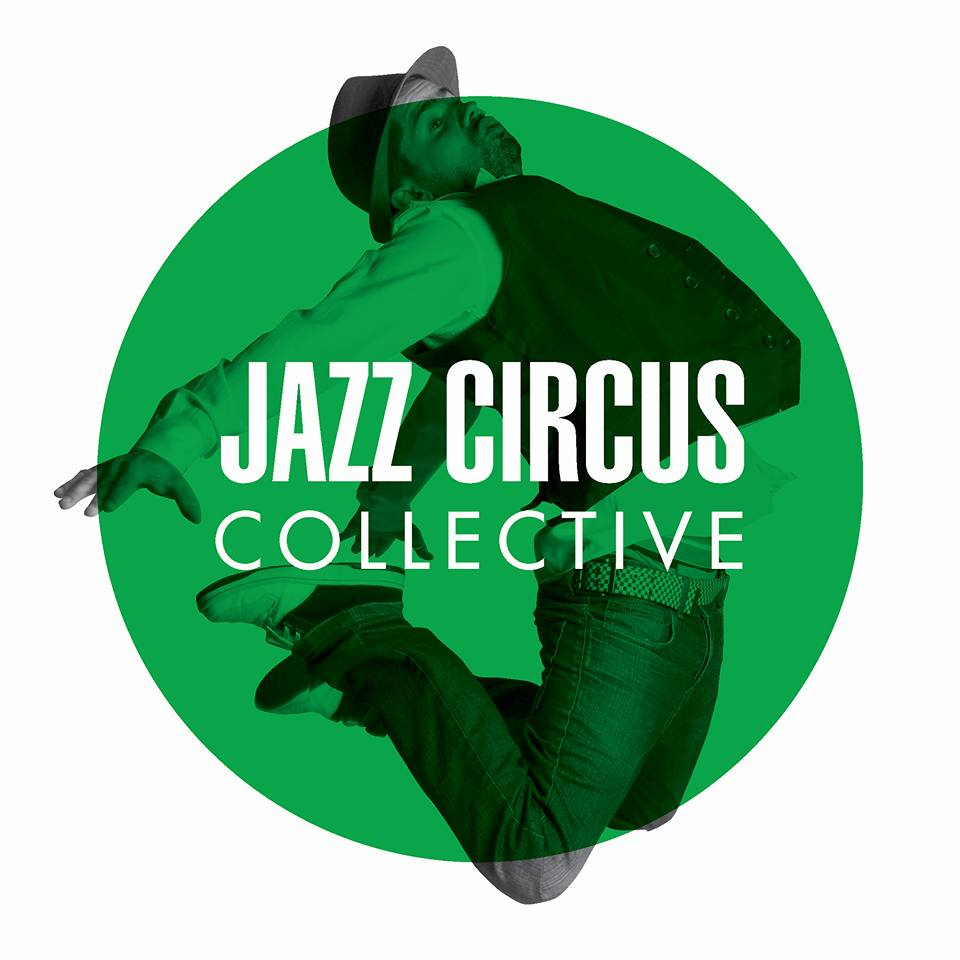

Choose the style of music that fits the best to your party or event.
Do you have something specific on mind as a Roaring Twenties event or disco ball event?
Send us a message and we will arrange the perfect band for you.
JAZZ
Ideal for receptions, background music, home parties and business parties. Our Jazz bands create the perfect atmosphere for a relaxing event. They can as well bring the party up on request with uptempo music.
Miguel Sucasas Jazz Band

Miguel Sucasas is a young Spanish musician, graduated from the Royal Conservatory of The Hague. He has being touring around Europe with his music projects and has two music albums with his original music. Together with his jazz band they are the perfect fit for events such as receptions, weddings or business parties.
Watch here.Price starts at (v.a.) €450
Felipe Castro Saxophonist

Saxophonist Felipe Castro, nominated to Latin Grammys in 2016 and who has been involved with countless artists worldwide, brings you SAXOPHONE LIVE MUSIC, saxophone solo with high quality backgrounds or with the full band, with a varied repertoire from bossa nova, Alicia Keys, Michael Jackson, Maroon 5, Stevie Wonder, Earth Wind and Fire, All Green, Donna Summer etc, ideal for weddings, dinners, meetings, cocktail, and any event that needs ambient music.
Price starts at (v.a.) €450
CLASSIC
Ideal for an elegant ambiance, classical background music for events. You can book a soloist, duo, trio, or quartet. They can perform different musical genres from classical to pop.
Quartet with a Twist

Quartet With A Twist (QWAT) is a string quartet based in Amsterdam, The Netherlands, comprised of conservatory students from around the country. Forming in 2020, the quartet saw a gap in the market for specialised live event and wedding music and, since it’s success from it’s origination in Perth, Western Australia, decided to bring that knowledge across the globe. The ‘Twist’ in QWAT’s name stands for their unique instrumentation – instead of the standard two violins, viola and cello, the cello has been replaced with a double bass! As a result, QWAT’s sound is unique and sets them apart from other string quartets. With their fun personalities and high calibre of musicianship, Quartet With A Twist has got you covered for your next event!
Price starts at (v.a.) €650
DJ / DJ + Musician
We collaborate with a wide range of DJs. We offer from jazzy oriented music, to all around party, salsa nights or disco dance among other styles. Did you ever dream about having a saxophonist walking between your guests while the DJ is bringing the party up? We have it ready for you.
Jazz Circus Collective
The Jazz Circus is a jazz-oriented total entertainment concept. It stands for events with a "Jazzy touch". From drinks in the afternoon to dancing in the early hours. The Jazz Circus combines almost all aspects of the nightlife experience. Think of DJ-ing, live acts, hostessing, dance performances, variety, decor to technical details. Our music and acts are characterized by appealing to a wide audience and that's how we see everyone dancing to our music.
Price starts at (v.a.) 950€ (4 hours DJ + Equipment)
PHOTO & VIDEO
Our team of professional photographers is always at your disposal. They have a broad work experience in events such as private parties, weddings, music and food festivals. For an optimal experience during your event book a photographer with us and let the rest of the work in our hands. Check the package prices for the best deals.
Doris van Iperen
I am Doris van Iperen, 28 years old and a photographer for almost more than 10 years. My interest in photography is very wide, I have taken care of photography/videography for film and musical premieres, photographed the largest ballet in the world, and contributed to the book “festivalland”, a book about festival and nature, I have photographed almost all the festivals in the Netherlands. I am also a singer and I sing in 3 bands. I am very excited to contribute to musicforevents and work in such a nice creative and musical team!
Price starts at (v.a.) 150€
Sabine

I am Sabine and since the moment I could hold a camera I would run around with one. Around the age of 12 I got the old camera from my dad. It started with pictures of animals and holidays, later I started portraying my own special effect make-up looks. Because of this I started doing portrait photography. I like to make dynamic pictures which shows the mood and the personality of a person/character. My pictures are vibrant and full of color, but I also like to play with black and white.
Price starts at (v.a.) 150€
Videography

Hire our experienced videographers for a vivid memory of your day. We use the latests technologies to capture your videos with the highest resolution. Drone recordings are also possible. Price v.a. 200€
Price starts at (v.a.) 200€